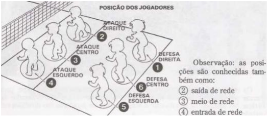
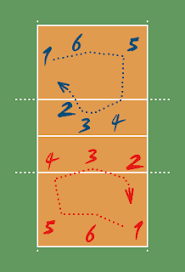

Net height: 2.24 for women's games and 2.43 for men's games
Number of players: 12 players maximum, 6 effective and 6 substitutes
Point Marking:
The team scores when:
Can make the ball touch the opposing team's court;
The opposing team throws the ball out of the playing court;
The opposing team commits a rule violation;
The opposing team is penalized.
Meaning of Rally in volleyball:
Rally in volleyball is all the actions that take place in the game from the moment a service takes place until the moment a team scores a point. With each new service a new rally is started. If the serving team wins a rally, it earns a point and the same player continues to serve. If the team receiving the service wins a rally, it will score a point and must execute the next service.
Number of sets in a volleyball match:
A volleyball match has a minimum of 3 sets and a maximum of 5 sets;
The team that first scores 25 points with a difference of 2 points wins a set in volleyball;
If the game is tied at 24 to 24, the set will continue beyond 25 points until a team manages to open the 2 points difference and win the set. Ex: 26 to 24, 25 to 27, 28 to 26 etc...;
The team that first wins 3 sets will win the match;
In the event of a tie in 2 sets to 2, the tiebreaker set or 15-point tie-break will be played.
Initial team positioning:
Each team must always have six players on the playing court. The initial positioning of the players indicates their rotation order on the court. This order must be maintained throughout the set and can only be changed at the beginning of a new set. When the ball is put into play by the server, each team must be positioned within its own playing court, (except the server) in the order of service. After the service hit, players can move and occupy any position on their own court.
The positions of the players are: three players are positioned along the net, form the attack line and occupy the positions: 4 NET ENTRY (attack-left); 3 NET HALF (attack-center) and 2 NET OUTPUT (attack-right).
The other three players are the defensive players and occupy the following positions: 5 BACK IN (left-back), 6 MIDDLE (center-back) and 1 BACK OUT (right-back).

player positions
Rotation:
The rotation of players is determined by the starting line-up, controlled by the order of service and the position of the players, during the set. When the receiving team wins the right to serve, its players rotate, advancing one position, always clockwise.
The player in position 2 goes to position 1 in order to serve; the player in position 1 goes to position 6, and so on.

rotation scheme
"inside" ball:
the ball is considered “in” when it touches the floor of the playing court, including the boundary lines.
"out" ball:
the ball is considered “out” when:
the part of the ball that touches the floor is completely outside the boundaries of the court,
touching an object outside the court, the ceiling or a person not playing a role,
touching the antennas, ropes, poles or the net itself outside the side lanes,
crossing the vertical plane of the net, being partially or completely outside the permitted crossing space,
completely cross the space below the net.
Team Touches:
Each team has the right to touch the ball a maximum of 3 times (in addition to the blocking touch) to return it to the opposing team. If there is a greater number of hits, the team commits a “four hits” foul. Team touches include not only intentional touches, but also unintentional contact with the ball. A player cannot touch the ball twice consecutively.
Ball touch faults:
four touches – when the team touches the ball four times before returning it to the opposing team.
Supported touch – when a player leans on a teammate or on some structure/object in order to reach the ball and touch it, inside the playing court.
Driving – when a player does not touch the ball, but holds it, or drives it in any direction.
Two touches – when a player touches the ball twice or the ball touches several parts of his body in succession.
Under-the-Net Invasion:
the player is allowed to penetrate the opponent's space under the net, provided that he does not interfere with the opponent's playing action.
The libero player:
Each team is entitled to list 2 liberos.
Each team can only have 1 libero acting on the court,
The libero must wear a uniform with a dominant color different from the other players on his team,
The libero cannot serve, block, attempt to block or attack the ball when it is above the top of the net,
The libero can only replace players who are occupying the defense zone (positions 5, 6 and 1),
If the libero in the attack zone makes a lift using touch, his teammates will not be able to attack above the top lane of the net. If the lift is made using the headline foundation, the attack can be carried out normally,
In the defense zone, the libero can carry out lifts in any way.
Definitions of other volleyball terms:
Driving: offense committed by the player when driving the ball instead of touching it,
Invasion: infraction committed with the body beyond the opponent's net,
Crack: violently hitting the ball on the floor of the court of the device,
"Largadinha": a light touch on the ball, looking for empty space in the opponent's defense,
Second ball: attack on the second touch, surprising the opponent,
Match point: point that can define the game,
Set point: point that can close the set,
Tie break: is the tiebreak set, played when each team wins two sets.